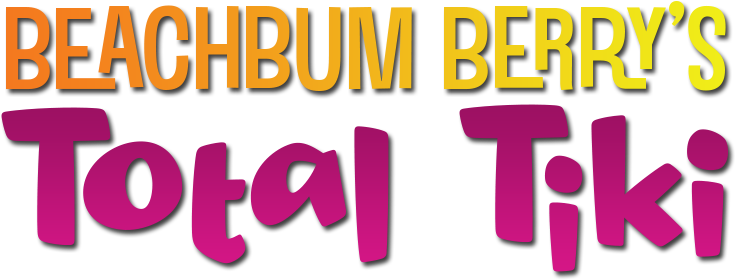
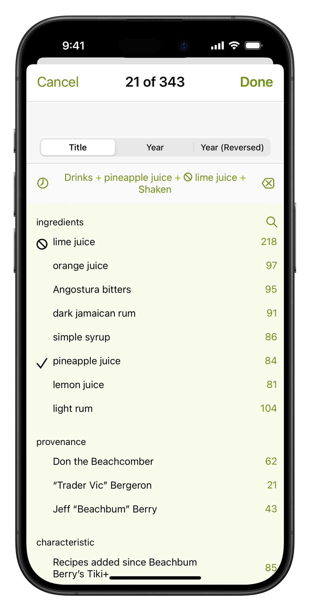
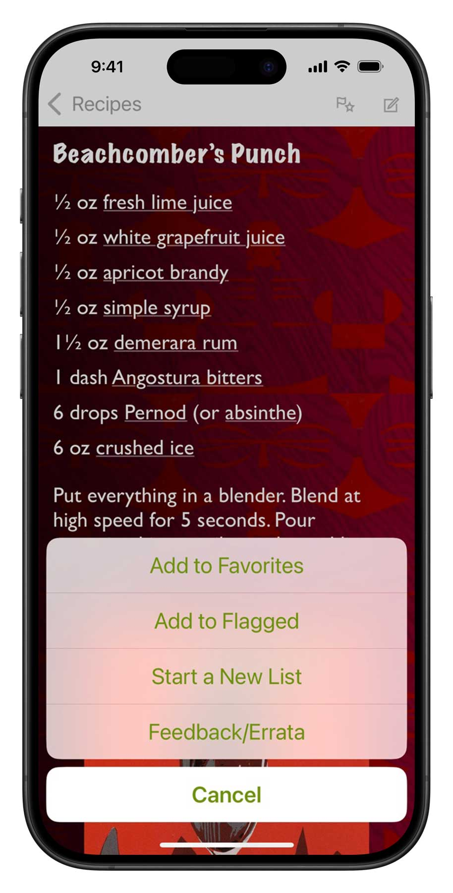

★★★★★ by PSpreitz, Thu, Jun 16, 2022
I have learned so much from this app, both from the historical notes about the cocktails and from the amazing amount of information it offers about the various ingredients. You can create an inventory of ingredients you have on hand and then search by “drinks you can make” (or drinks where you may be missing one or two ingredients). I also love the fact that for the most iconic cocktails it has several different recipes, showing the evolution of the cocktail through the decades and as it appeared in different venues.
These are the recipes you’re looking for
Since 2014, Total Tiki has been the master database for exotic drinks, with over 320 (and growing) recipes researched and curated by historian Jeff “Beachbum” Berry. You’ll find authoritative recipes for for the Zombie, Mai Tai, Painkiller, and Scorpion, but also scores of less-known, brilliant concoctions of the 1940s, -50s, -60s and -70s, and dozens of delicious, contemporary formulations that point the way to the future. Total Tiki is also the perfect complement to Berry’s seminal books, such as Sippin’ Safari and Potions of the Caribbean.
Easy-to-use power
Search by name or ingredient just like in your address book. Surf through recipes and ingredients by tapping hyperlinks.
More surgical questions are just a few taps away: filter all the recipes by any combination of ingredients and keywords.
Ingredient aware
Our drink recipe apps have the smartest ingredient system. Simply check off what you have and the app will tell you which drinks you can make, including legit substitions.
★★★★★ by Cessna928, Fri, Nov 5, 2021
I can’t remember the last time I liked an app enough to actually review it. But, this is one of the rare few that I actually want people to know about. This app not only gives you a huge number of tiki drink recipes, but also helps you adapt your collection of rums and other liquors to each recipe. Lots of other recipes leave you hanging when you can’t find the exact rum they want, but this app helps you a cross reference similar brands and types of rum to find a suitable alternative.
Simple tools of great utility
Flag recipes you want to try, populate your favorites list, create a new list for planning the drinks for your next party. Add your own notes to any recipe.
Part of a talented family
Total Tiki inter-operates with its seven sibling recipes apps that you can add at any time.

Set up your free sync account and all these apps can share your ingredient inventory, lists and journal notes. In the same manner, you can have Total Tiki on both your iPhone and iPad, and they’ll stay in sync. You can even access your sync data with a web browser.